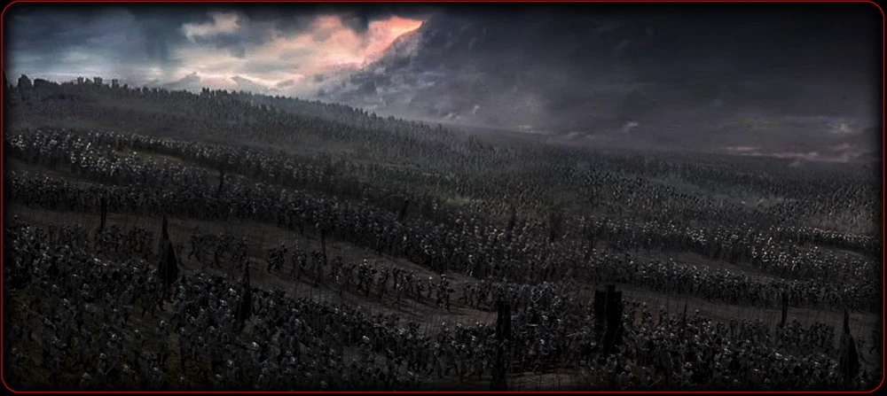
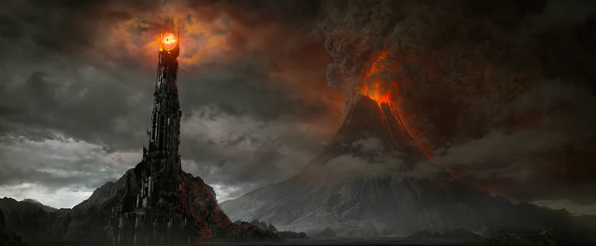

The West contains a vast mountain range in a rough rectangular design; the Ered Lithui (ash Mountains) to the north, and the Ephel Duath (mountains of Shadow)
to the west and south.
The valley of Udun is one of the few entrances for larger armies, but is guarded by the Black Gate, and the Dagorlad beyond that.
To the east is open, but not as accessible as one might think, due to Easterlings and servants of Sauron constantly patrolling the routes
Saurons tower is located on the Plateau of Gorgoroth, nearby Mount Doom

A picture of a Mordorian Army marching to war
History
Mordor was first formed in the First Age, with Mount Doom having been created by Morgoth. Sometime before the War of Wrath, Shelob settled in Mordor with her offspring.
Sauron settles 1000 after the end of the First Age, and it remained his seat of power throughout the second and at the end of the Third Age as well.
Was the leading force of evil in the War of the Last Alliance, being besieged and with Sauron's eventual defeat and the loss of the Ruling Ring

To-do Lists
Run away from patrolling Orcs
Raise resistance efforts in the Sea of Nurn
Visit Orodruin (Mount Doom) where the One Ring was forged